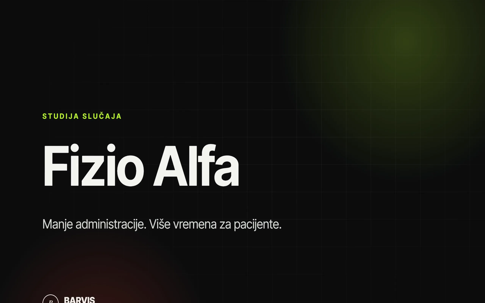

Studija slučaja · Projekat za klijenta
Fizio Alfa Manje administracije. Više vremena za pacijente.
- Klijent
- Fizioterapeutska ordinacija
- Moja uloga
- Sve, od razgovora do servera
- Platforme
- Računar, tablet i telefon
- Tehnologija
- Django, PostgreSQL, Docker
- Smeštaj
- Privatni server, samo za osoblje

48 sekundi kroz sistem: današnji raspored, kalendar, naplata, karton klijenta, analitika i telefon. Izmišljeni podaci.
01 · Kontekst
Tim koji radi sa ljudima, ne sa tabelama.
Fizio Alfa je nastala iz razgovora sa timom jedne fizioterapeutske ordinacije i napravljena je prema načinu na koji oni rade — ne prema gotovom šablonu.
Problem: termini, klijenti i naplata vodili su se odvojeno. Teško se videlo ko je zakazan, šta je urađeno i ko je platio, a svaka provera je značila prelistavanje više izvora.
- Ko je zakazan i kada — na jednom mestu
- Šta je urađeno — na drugom
- Ko je platio — na trećem
- Ceo tim vidi istu nedelju; preklapanja su sprečena
- Izbor terapija sam sabira cenu
- Dugovanje se vidi u kartonu, bez računanja
02 · Rešenje
Jedan panel za ceo tim.
Zajednički kalendar, karton klijenta, brz unos cene po terapiji, pregled dugovanja i podsetnici na telefonu. Svaki deo je napravljen oko jednog svakodnevnog posla u ordinaciji.
Kalendar
Ista nedelja za sve.
Svi terapeuti vide isti raspored, sa terminima u bojama statusa. Sistem ne dozvoljava dva termina u isto vreme za istog terapeuta.

Naplata
Cena za par sekundi.
Posle termina se označe urađene terapije, a sistem sam sabira iznos po cenovniku ordinacije. Bez kalkulatora i prepisivanja u tabelu.

Karton klijenta
Istorija i dugovanje na jednom mestu.
Svi termini klijenta, urađene terapije i koliko je ostalo da se plati. Pitanje „koliko vam dugujem?“ ima odgovor za sekund.

Telefon i podsetnici
Raspored u džepu.
Dnevna agenda i novi termin jednim dodirom. Svaki terapeut dobija podsetnik samo za svoje termine, i kada aplikacija nije otvorena.

Podsetnici rade kao obaveštenja na telefonu i računaru (Web Push).
03 · Uloga studija
Jedna osoba, od razgovora do servera.
- 01Razgovor sa timomKako rade danas i gde gube vreme.
- 02DizajnEkrani prema stvarnom danu u ordinaciji.
- 03RazvojKalendar, kartoni, naplata, uloge, istorija promena.
- 04Puštanje u radPrivatni server dostupan samo osoblju.
- 05Rezervne kopijeRedovne kopije baze podataka.
- 06OdržavanjeIspravke i nove funkcije kako posao raste.
- Django
- PostgreSQL
- Docker
- Web Push
- Privatni server
O rezultatima: ne objavljujem brojke o uštedi vremena ni izjave klijenta dok ih ordinacija ne potvrdi. Sve što vidite ovde je stvarni sistem, prikazan sa izmišljenim podacima.